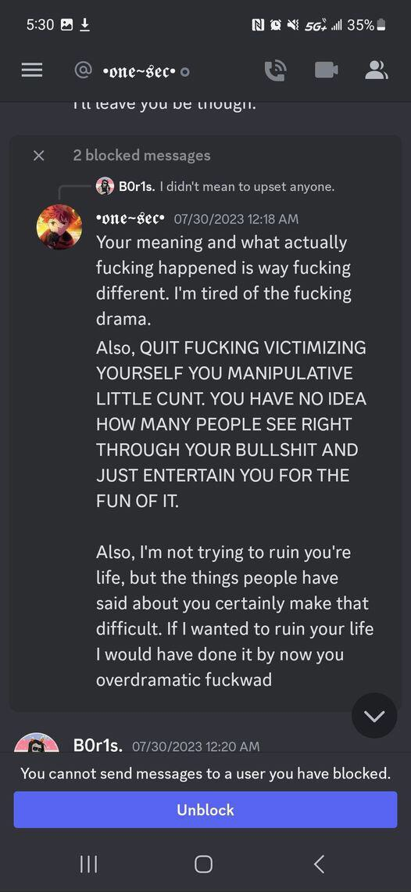

Jordon Olson many times has tried to collect personal information on many people. He actively hides it now and still collects it.
Like a rat he scuttels to try to collect normal peoples addresses just for attention.
On multiple occassions talks shit about people behind their backs in order to quote on quote "manipulate them"
Not to mention the fact that he abuses people around him, and uses them for self pleasure. Dehumanizing them.
In short to all those who are reading this, This man is absolutely a disgusting person, one who does not change.
And then actively posts it on a groupchat cesspool to trick people into thinking they're the good guy. So as even going to people in person
and telling them not to talk to certain people like he owns them. He has on multiple occasions
threatened others, and has the audacity to spread false information about someone who quite literally made a joke and is working on themselves to be better? Down right immature.
We are all kids but sometimes its up to the ones who know whats going on to help the ones in need, its digusting that there are people who believe in someone who looks at themselves like a god
support the very things that he states he is against. If you still side with him then good job on being a great friend
However choosing not to confront him about this is plain awful. Whether its fear or kinship, people will be loyal to who they trust.
This is just a psa to those who know jordon and are close,
This entire webpage was written by a team of people, all of them in which are 3rd party and have nothing to do with this. Drama should private, but when things go too far its up to the ones who are brave emought to take a stance
goodbye and heres some screenshots you can read feel free to judge them they are provided by good people
I may not say my name or will ever show who I am for confidentiality, I take no credit. That is to say I dont normally go out of my way to do this. I have my fair share of drama, and I think its hightime that we nip all of it at the bud. Anyways make sure that the loser in question for todays festival gets what they deserve. I wish you all good day, next time this happens, Tell someone you know and take it to the office. We are always watching over what goes on at Benton.
Here are some other things he has done
Sends Death Threats, Sexual Assault, Theft